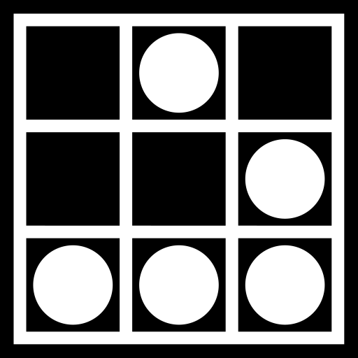

<ion-header>
  <ion-toolbar color="primary">
    <ion-title>{{ "LIBRARY.library" | translate }}</ion-title>
  </ion-toolbar>
</ion-header>

<ion-content>
  <ion-list>
    <ion-item *ngFor="let item of getLibraryService().getLibraryItem$ | async" 
      [color]="this.getItemsColor(item.lended.status)">
      <!-- <ion-icon name="library-outline"></ion-icon> -->
      <!--  -->
      <!-- <ion-icon src="../../../assets/icon/conway-life-glider.svg"></ion-icon> -->
      <!-- <ion-icon src=""../../../assets/icon"></ion-icon> -->
      <!-- <ion-icon src="../../../assets/icon/perspective-dice-six-faces-four.svg"></ion-icon> -->
      <!-- <ion-icon name="dice-outline"></ion-icon> -->
      <ion-avatar slot="start">
          
      </ion-avatar>      
      <ion-label>
        <h2> {{ item.name }} </h2> 
        <h3> {{ "LIBRARY_ITEM_CATEGORY."+item.category | translate }} </h3>  
        <!-- <p> {{ item.lended.userId }} </p> -->
    </ion-label>
    <ion-button (click)="this.lendItem(item.name);" *ngIf="!item.lended.status" slot="end">{{ "LIBRARY.lend" | translate }}</ion-button>
    <ion-button *ngIf="canIReturnItem(item.lended.status, item.lended.userId)" slot="end">{{ "LIBRARY.return" | translate }}</ion-button>
    </ion-item>
  </ion-list>
</ion-content>
